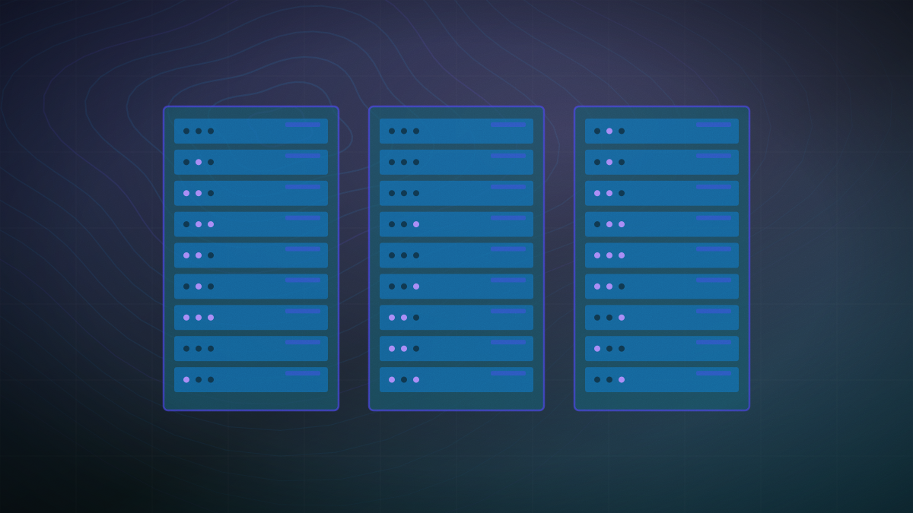

Cerebras unveils a CS-4 chip it says is 30 times faster than GPUs at inference
The company's own benchmark leans on sparsity and a doubled clock speed rather than a new chip design, and its peak bandwidth figure is untested in practice, an independent analysis found.

Original cover art, generated for this story. THE VISSION does not republish third-party press imagery.
- Cerebras unveiled its CS-4 wafer-scale chip on August 18, saying it delivers up to 30 times the token-generation speed of GPU systems and up to 10 times more throughput per watt than its own CS-3.
- The new WSE-3 Turbo chip doubles memory bandwidth to 43.2 petabytes per second and packs three accelerators per rack, versus one in the prior generation; first shipments begin this quarter.
- An independent analysis by The Register found the doubled performance comes from a higher clock speed on the same process and transistor count, not a new chip, and that the 250-petaflop figure depends on sparsity that typically doesn't help LLM inference.
- Cerebras also reports a concrete figure of 4,400 tokens per second on the open gpt-oss-120b model, and says deployment time drops from days to hours thanks to a redesigned power and cooling assembly.
Cerebras unveiled the CS-4, the first system in its next-generation Nexus rack-scale platform, on August 18. The company says the system delivers up to 30 times the token-generation speed of GPU-based systems and up to 10 times more throughput per watt than its own previous-generation CS-3, with first shipments beginning this quarter.
The system's WSE-3 Turbo chip doubles memory bandwidth to 43.2 petabytes per second, cuts chip-to-chip interconnect latency to 2 microseconds from 5, and Cerebras rates it at 250 petaflops of sparse FP16 compute against 25 petaflops dense. The CS-4 rack packs three of the wafer-scale accelerators, up from one in the prior generation, for a combined 132 gigabytes of on-chip SRAM. Cerebras also redesigned the chip's power and cooling into what it calls a Wafer-Scale Backpack, which it says cuts deployment time from days to hours.
An independent analysis by The Register found the doubled performance figure comes largely from a higher clock speed — roughly 2.8GHz versus 1.4GHz previously — on what is otherwise the same process technology, wafer size and transistor count, rather than a new chip design. It also noted that the 250-petaflop sparse-compute figure depends on sparsity, which as a general rule doesn't benefit large language model inference, and that the peak memory-bandwidth figure is "purely theoretical" because the chip lacks the compute to actually saturate its own SRAM.
Cerebras's own more concrete figure — 4,400 tokens per second running the open gpt-oss-120b model — is a real benchmark result rather than a vendor multiplier, though it applies to one specific model. The Register also noted Cerebras has shifted from selling standalone inference hardware toward disaggregated architectures built with AWS and AMD, in which GPUs handle a model's prefill stage and Cerebras chips handle token decoding — a partnership structure that suggests the prior standalone design had real limits of its own.
For anyone shopping for inference hardware, the gap between Cerebras's "30x faster" headline and The Register's finding that the underlying chip is largely the same silicon at a higher clock speed is the difference between a genuine architecture win and a tuning update marketed as one, and the 4,400-tokens-per-second figure on a named, open model is the number worth comparing against a GPU cluster's own measured throughput, not the multiplier.